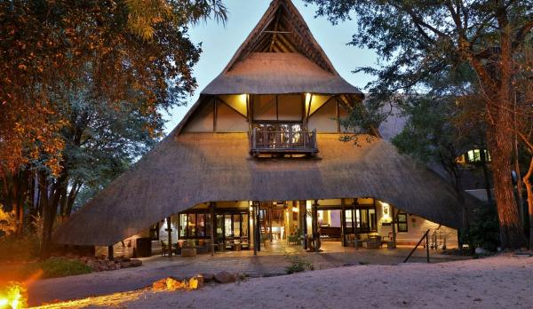
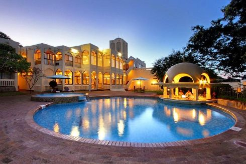
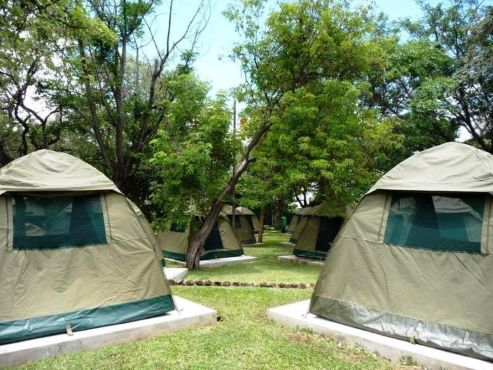

Lodges & guesthouses
For smaller stays, a personal welcome and local character.
A practical guide to the wild landscapes, unforgettable adventures, and living cultures around Victoria Falls.
Explore activitiesKeep scrolling to find your kind of adventure
Known locally as Mosi-oa-Tunya, or “The Smoke That Thunders,” Victoria Falls is a vast curtain of water on the Zambezi River, shared by Zimbabwe and Zambia. Its spray, rainforest, basalt gorges, and rainbows make the landscape extraordinary. Read the UNESCO description.
Use this guide to pair a visit to the viewpoints with an activity that suits your pace—from a gentle river cruise to a full day outdoors.
Victoria Falls town and nearby areas offer different styles of stays.

For smaller stays, a personal welcome and local character.

On-site services and facilities.

Independent travel.
Pack water and sun protection, check current park guidance and activity conditions before setting out.